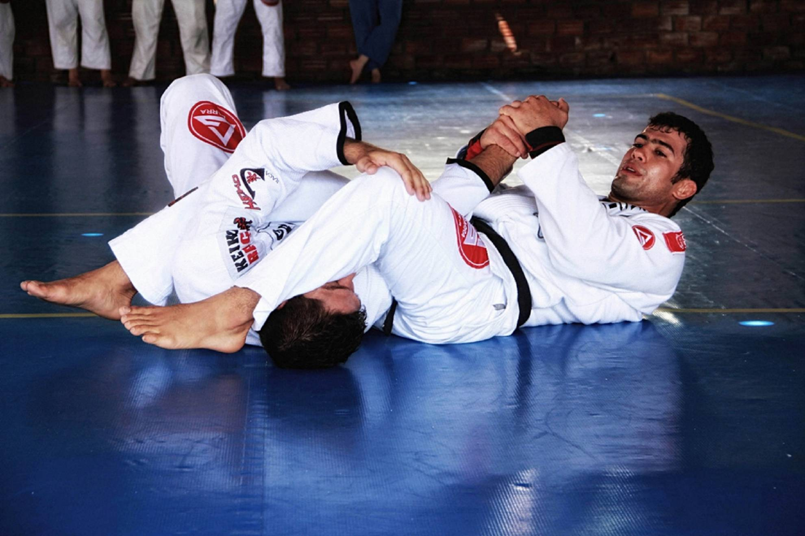
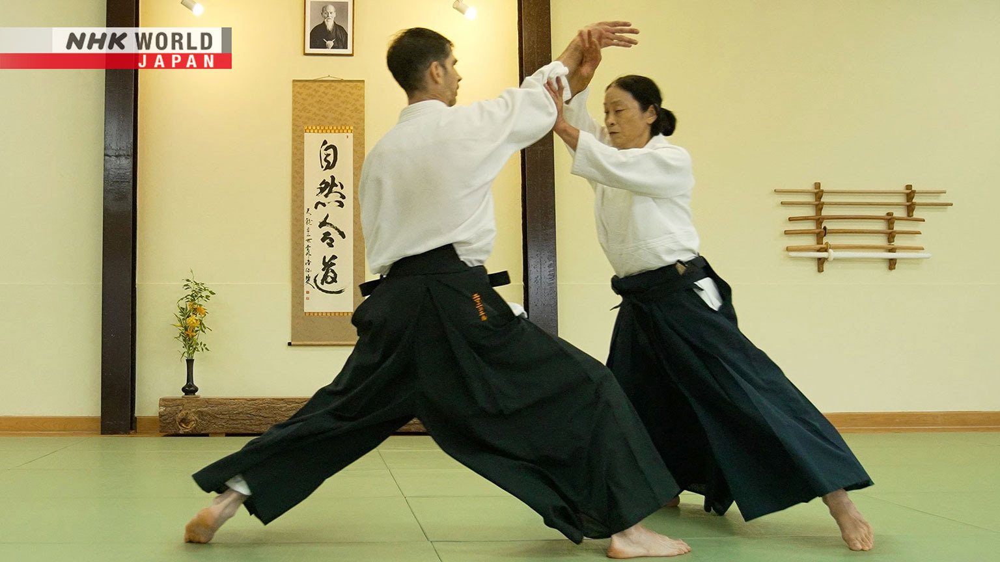
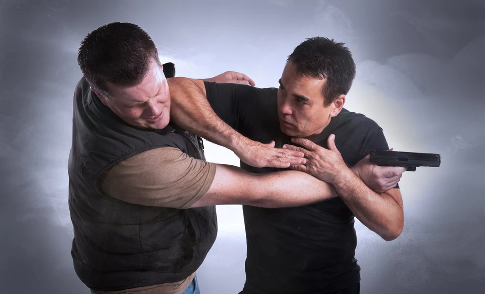
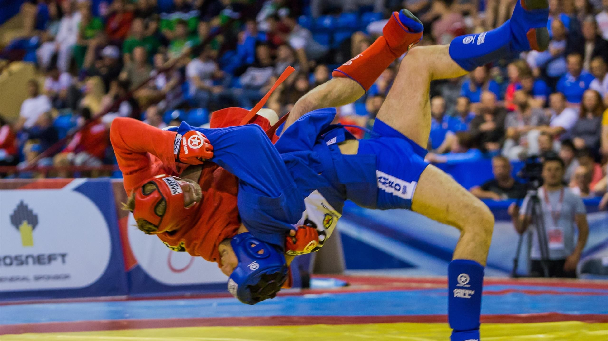
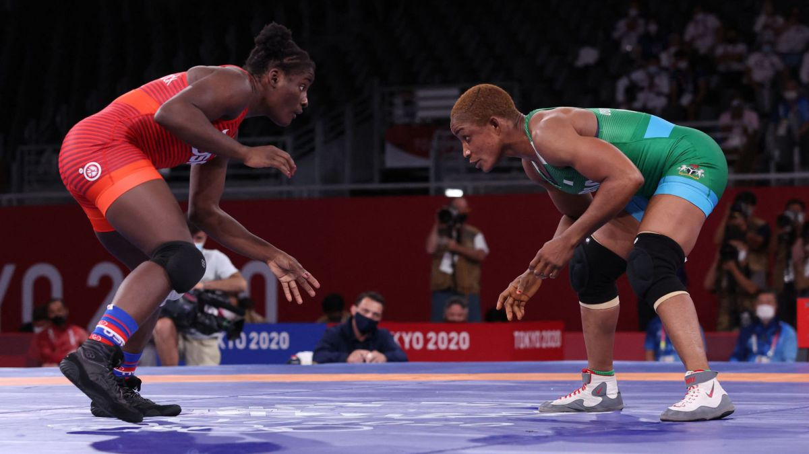

Artes Marciales con Agarre
Las artes marciales con agarre son disciplinas de combate que se enfocan en técnicas de control y sometimiento del oponente a través del uso de agarres y técnicas de agarre. Estas artes marciales se caracterizan por su enfoque en el combate cuerpo a cuerpo, utilizando la fuerza, el equilibrio y la técnica para someter al oponente.
-
Judo
Este tipo de arte marcial tradicional de origen japonés se caracteriza por el hecho de que, al contrario que otras disciplinas en que se prioriza el golpe, en el judo el principal mecanismo de combate es el agarre. En este sentido, en el judo se absorbe la fuerza y el peso del contrincante para lograr derrotarle.
Esta disciplina, aunque espectacular, no resulta especialmente agresiva y está más centrada en la defensa: se focaliza en utilizar la propia fuerza del rival contra él para desestabilizarle y derribarle. Aún así requiere de un entrenamiento de todo el cuerpo y resulta un deporte muy técnico, incorporando además llaves, sumisiones y estrangulaciones.
-
Jui Jitsu brasileño
El jui jitsu brasileño se desarrollo a partir del Jiu Jitsu japonés pero se realizó modificaciones y adaptaciones por la familia brasileña Gracie en Brasil. Una de las principales características del Jiu-Jitsu Brasileño es su énfasis en las técnicas de lucha en el suelo, donde los practicantes buscan derribar al oponente y dominarlo utilizando movimientos de agarre, control, sumisión y estrangulamiento. Se pone gran atención en la posición y el control del oponente, así como en la capacidad de realizar transiciones fluidas entre diferentes posiciones y técnicas.
El Jiu-Jitsu Brasileño se basa en la idea de que la técnica y la eficiencia superan la fuerza y la resistencia física. Los practicantes aprenden a utilizar el equilibrio, la palanca y la posición estratégica para controlar y someter a sus oponentes, incluso si son más grandes o más fuertes. Se enfatiza el uso inteligente de la energía y la capacidad de adaptarse a diferentes situaciones de combate. -
Aikido
El Aikido es un arte marcial japonés que se enfoca en la armonización y neutralización de los ataques, utilizando movimientos circulares y fluidos. Fue desarrollado por Morihei Ueshiba, conocido como O-Sensei, a principios del siglo XX como resultado de su búsqueda de un arte marcial que promoviera la paz y la armonía.
A diferencia de otras artes marciales que se centran en la fuerza y la confrontación directa, el Aikido se basa en la idea de redirigir la energía del oponente para neutralizar el ataque. Los practicantes utilizan movimientos suaves y fluidos, combinados con técnicas de agarre, proyección y sumisión, para controlar al oponente sin causar daño innecesario. -
Krav Maga
El Krav Maga es un sistema de autodefensa y combate cuerpo a cuerpo desarrollado en Israel. Se buscó desarrollar un método práctico y eficiente para la defensa personal en situaciones de combate real.
El Krav Maga se caracteriza por su enfoque directo y agresivo, utilizando técnicas simples y efectivas para neutralizar rápidamente a un oponente. Se basa en movimientos naturales del cuerpo y utiliza una combinación de golpes, patadas, rodillazos, codos, así como técnicas de agarre, estrangulamiento y defensa contra armas.
El objetivo principal del Krav Maga es incapacitar al oponente lo más rápido posible y escapar de la situación de peligro. Se enseña a los practicantes a reaccionar de manera rápida y efectiva ante ataques comunes, incluyendo golpes, agarres, estrangulamientos, y amenazas con armas. También pone gran énfasis en la mentalidad de combate, enseñando a mantener la calma y a tomar decisiones rápidas bajo estrés. Se entrena en situaciones realistas y se fomenta la capacidad de adaptarse y enfrentar múltiples oponentes. -
Sambo
El Sambo es un arte marcial y deporte de combate que se originó en la Unión Soviética en la década de 1920. Fue desarrollado como una forma de combate cuerpo a cuerpo para las fuerzas armadas y se basa en una combinación de técnicas de lucha libre, judo y otros estilos de artes marciales.
El término "Sambo" proviene de las palabras en ruso "SAMozashchita Bez Oruzhiya", que significa "defensa personal sin armas". Se caracteriza por su enfoque en el desarrollo de la fuerza, la velocidad, la agilidad y la técnica. Los practicantes aprenden a utilizar el equilibrio, el control de la postura y la aplicación de la fuerza para dominar a su oponente. Se enfatiza la adaptabilidad y la capacidad de responder a diferentes escenarios de combate. -
Lucha Libre Olímpica
La lucha libre olímpica es una disciplina de combate que forma parte de los Juegos Olímpicos. Es un deporte en el que los luchadores buscan derribar, controlar y puntuar a su oponente utilizando una variedad de técnicas de agarre y proyección.
En la lucha libre olímpica, los luchadores tienen la libertad de utilizar tanto agarres en la parte superior del cuerpo como en las piernas. Esto significa que pueden agarrar las piernas de su oponente, realizar derribos y utilizar técnicas de control para mantenerlo en el suelo. El objetivo principal es conseguir derribar al oponente y mantenerlo bajo control en posiciones de dominio.